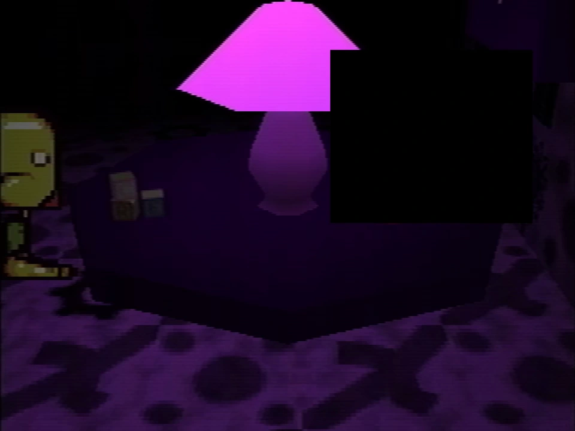

Censorship
{kind=link}

{kind=link}
A censored object on a table
- This page is for context and discussion around all instances of elements of the footage being censored and what it could mean. For info specifically about the caskets, see Caskets.
The Petscop videos employ censorship on a number of occasions. When an object or words are censored, a black box appears on the screen, obscuring that object or words from the viewer.
These censors are not part of the game itself, but rather are edited into the videos after each recording, presumably by the channel managers.
There are two types of content that has been censored in the Petscop videos:
- Hiding (fictional) personal/identifying information, such as coordinates and phone numbers.
- The depictions of the caskets.
The purpose of the censorship is not clear, and the channel managers have said that they can't say why. However, most theories can be inferred from references in the game:
- In-universe, to prevent showing overly personal information that could identify the characters, since, by this point, the channel managers acknowledge that the videos have left their intended audience. (Out-of-universe, this is similarly effective at deterring the audience from engaging with any real people, preventing them from incorrectly treating Petscop as an ARG.)
- In recording playback shown in Petscop 20, Marvin finds depictions of the unfinished caskets. Rainer's description appears, and suggests that viewing a casket has an affect on the player, saying "Anybody who sees them is sure to become part of the family." The censorship, then, may be to prevent those watching the Petscop videos from being affected by the caskets.
Instances
These are the instances of which censors have appeared in the videos.
Object on a table in the Child Library
In Petscop 7, Paul enters Care's face with Mike's eyebrows into the Child Library and enters the associated room. One of the objects shown on the table is censored. Paul appears to be unsure about the item, wondering if it is an item unique to the room or something that could appear in any room. Afterwards, the video cuts to text added in editing:
We've had to cover something with a black box.
Right now we can't say why.
After this text, an additional list of further occasions where the channel managers expect to have to censor something (assuming they happen later) is provided.
Some other things we're expecting to "censor" in the future:
- "A big present with a sticker on it"
- "Something on a wall, in a black house"
- "Written on a chalkboard"
In Petscop 20, casket 1 depicts a flower vase on its side with a yellow flower in it; this may be what the item censored on the table may have been (all other caskets more clearly correlate to further censors that do not involve personal information and that are on the list of future censors, leaving casket 1 as the only one otherwise by process of elimination).
The list is later applicable to further censorship instances that correlate with the caskets.
{kind=link}
The center of a spinning red pyramid
In Petscop 9, Paul interacts with "a big present with a sticker on it" in the party room. The present opens, and a red pyramid object appears from it, growing to a larger size and spinning. Once something starts seeming to appear within the pyramid, its middle is censored. Paul reacts in a seemingly distressed way towards it, and appears to try to avoid looking at it while still looking through the party room.
In Petscop 20, casket 2 depicts a red pyramid with a depiction of Care's face in the middle.
{kind=link}
{kind=link}
A response from the red tool
In Petscop 10, Paul asks the red tool "where was the windmill?" and the answer is censored. Paul has no clear reaction to this, and the video immediately ends. Some experimentation suggested that the answer could not have been very long, or else would have broken the censor.
This same censored instance is seen in old recordings of Paul's gameplay shown in Petscop 22 (which take place after Petscop 10). With what Paul is discussing with Belle over the phone, it seems to imply that what is being censored is geographical coordinates for the location of the windmill, or more specifically where the Windmill used to be before it disappeared. No part of these coordinates are revealed, except that it contains "2" as a digit. The satellite image at these coordinates reveals a large "stone", possibly similar to the platform in Petscop 4. Paul also mentions there is a second set of numbers below the coordinates, but the meaning behind these numbers are never explained.
{kind=link}
{kind=link}
On the wall in the master bedroom
In Petscop 14, part of Paul's demo footage in the master bedroom has a censor over part of the wall. Paul does not appear to reference this later. Later, in a different demo recording ("attempt 22"), he brings the bucket of black paint to this wall, and paints over it using a roller. After the wall has been fully painted over, the censor disappears, indicating whatever was being censored has been covered by the game.
In Petscop 20, casket 3 depicts a red stencil over the wall in the master bedroom, shaped like Care NLM's hands.
{kind=link}
{kind=link}
A phone number on the Burn-in Monitor
In Petscop 16, the Burn-in Monitor displays the following message:
No controller input has been detected for a very long time.
Family, neighbors, police, (or whoever,)
KEEP GAME CONSOLE RUNNING,
call provided phone number.
The phone number directly under this message is censored. However, at one point, the censor disappears prematurely, revealing the first three digits (area code) of the phone number are "203". This area code corresponds to the southwestern region of the U.S. state of Connecticut, where the real-life events of Petscop are suggested to take place.
{kind=link}
{kind=link}
On a chalkboard in the school
In Petscop 23, while Pall is in the classroom on the third floor of the school, there is a black box over the lower left portion of the chalkboard while it is being viewed closer up. When it is not zoomed in, the board is not censored and shows red writing; however, the writing cannot be made out when it is not zoomed in.
In Petscop 20, casket 4 depicts red writing on a chalkboard in a school, along with referencing it in the casket's description.
{kind=link}
{kind=link}
{kind=link}
Text boxes
- Main article: Misconceptions and rumors#Empty text boxes
Throughout the series, there are several instances where a text box will appear without any text. These are often misinterpreted as censor boxes when the darker text box texture from the Newmaker Plane is used, most notably at the end of Petscop 14 when the game crashes, and in Petscop 16 before the Burn-in Monitor appears. These are not censor boxes.
When an image of a censored object is brightened, the black box will remain completely black. By contrast, brightening a screenshot of an empty text box will result in the box itself becoming brighter, as the texture is dark gray, rather than entirely black.
Additionally, text boxes are slightly blurred by the composite filter applied to the videos, whereas censor boxes are applied after the composite filter and are not blurred.
")
")
")